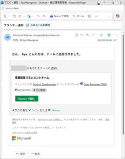

Alternative Architecture DOJO
https://aadojo.alterbooth.com/
オルターブースのクラウドネイティブ特化型ブログです。
フィード

Microsoft Defender の攻撃シミュレーショントレーニングが本物すぎた話 3
3
Alternative Architecture DOJO
こんにちは、オリビアです。8月が終わってしまいますね。 私は妊娠前までは5月から10月まで夏ネイルをしていたくらい夏が好きなのでさみしいです。 本物にしか見えない Planner 通知 突然ですが、皆さんの組織では標的型メールを想定したトレーニングを実施していますか？ 近年、標的型メールによる情報漏洩事件が頻発しています。 総務省によると、従来は官公庁や大企業が主なターゲットでしたが、最近では地方公共団体や中小企業もターゲットとなっているそうです。 さて、ここで以下のメールを見てください。 一見するとよくある Microsoft Planner の通知メールです。 Microsoft のロゴが…
2日前

GitHub Copilot管理者必見！9月までに確認したい予算設定とAI Credits運用
Alternative Architecture DOJO
GitHub CopilotのAI Credits運用を見直していますか？9月以降に向けて、利用量ベース課金への対応、予算設定の見直し、追加課金防止のポイントを管理者向けに解説します。
2日前

Azure App ServiceのMarkdown形式の応答機能を試した
Alternative Architecture DOJO
Azure App Serviceの新しいパブリックプレビュー機能「Markdown for Agents」を紹介。WebページのHTMLをMarkdownで返し、AIエージェント向けにノイズを除去、応答サイズを削減する設定手順（Azure CLI/REST）と検証例を解説。
15日前
Fabric入門：なぜ分析用データベースは正規化しないのか
Alternative Architecture DOJO
Microsoft Fabricの学習を進める中で出会った「なぜ分析用データベースでは正規化しないのか？」という疑問について整理しました。本記事では、正規化と非正規化の考え方の違いについてまとめています。
23日前
AI Dev Day 2026で登壇しました / セッションのGitHub Copilot最新情報をピックアップ
Alternative Architecture DOJO
こんにちは、dz_こと大平かづみです。 AI Dev Day 2026のコミュニティーブースにて、GitHub dockyard Radio & VS Code Monthly Update @ AI Dev Day 2026というセッションで登壇しました。これは2つのコミュニティのコラボ企画で、私はGitHub dockyardコミュニティの一員として参加し、VS Code Meetupの皆さんと一緒に話しました。 この記事では、当日のセッションで取り上げたGitHub Changelogの更新情報を、会場にこれなかった人にも届けられるようピックアップしてご紹介します。 GitHub doc…
1ヶ月前
AI Dev Day 2026で感じた、これからの業務とAI活用について
Alternative Architecture DOJO
こんにちは！ オルターブースの實成です！ 早いもので入社から1年半が経ちました。 今回は、2026年7月24日に東京・大手町の「大手町プレイス ホール＆カンファレンス」で開催された AI Dev Day 2026 に参加してきましたので、そちらのご紹介です。 これまで本イベントは「AOAI Dev Day」という名称で開催されていましたが、私は今回が初参加です。以前から参加レポートを見ていたこともあり、開催前から非常に楽しみにしていました。 今回は、イベントの概要や印象に残ったセッション、そして参加を通じて感じたことについてご紹介したいと思います。 イベントについて AI Dev Day 20…
1ヶ月前
SORACOM Discovery 2026に参加＆プロトタイプ展示を行いました！
Alternative Architecture DOJO
はじめに 夏の厳しい暑さがつづいており、体力を維持して暑さに打ち勝とうとしているやしきんこと中屋敷です。 今回は昨年に続いて参加した「SORACOM Discovery 2026」の参加ブログを書きました。 SORACOM Discovery 2026とは 「SORACOM Discovery 2026」は、株式会社ソラコムが主催する日本最大級のIoTカンファレンスです。 2026年7月7日に東京ミッドタウン（六本木）で開催されました。 discovery.soracom.jp 今年のテーマは「AIの進化とともに IoTは次のステージへ」となっています。 前回はIoTとAI等の様々な技術の「交…
1ヶ月前
ドローン有資格者の私が AI Dev Day 2026 で学んだ国産ドローンの現在地
Alternative Architecture DOJO
はじめに 先日開催された AI Dev Day に参加してきました。生成 AI やエージェント関連のセッションが数多く並ぶなかで、私が特に楽しみにしていたのが、「ソブリン AI がつくる新しいドローンの世界」（登壇：株式会社Prodrone）というセッションでした。 私自身、ドローンには以前から関心があり、資格も取得しています。 DPA（一般社団法人ドローン操縦士協会）の「回転翼3級」免許 目視外飛行に必要な無線従事者免許「第三級陸上特殊無線技士（三陸特）」 こうした背景があるため、今回のレポートは AI Dev Day 全体ではなく、ドローン×AI と、そこから見えてくる「ソブリン（主権）」…
1ヶ月前
AI Dev Day 2026に参加しました！
Alternative Architecture DOJO
はじめに はじめまして、そしてこんにちは。 今年度オルターブースに新卒で入社した柳井です。 このたび、AIエージェント開発をテーマにしたコミュニティイベント「AI Dev Day 2026」に参加してきました。 2026 年 7 月 24 日に東京で開催された約900人以上規模のイベントです。 aidevday.com 入社してまだ日の浅い僕にとっては、こうした大きな技術イベントに足を運ぶこと自体が初めての経験でした。 会場に着いた瞬間から、参加者の熱量や会話のレベルに圧倒される場面も多くありましたが、一日を終えてみるとたくさんの学びや気づきを持ち帰ることができました。 正直なところ、内容まで…
1ヶ月前
AI Dev Day 2026 に参加しました
Alternative Architecture DOJO
はじめに こんにちは！自分のメイド服の写真を弊社のサイトに載せる実績を解除してしまったオリビアです。 先日、大手町プレイスで開催された AI Dev Day 2026 に参加しました！ AI Dev Day とは 2026 年 7 月 24 日に開催された、コミュニティ主催の AI カンファレンスです。 昨年までは Azure OpenAI Service Dev Day （AOAI Dev Day）として開催されていましたが、今年から名前が変わりました！ 名前が変わったことで、Azure OpenAI Service に関係のあるなしにかかわらず様々な AI 関連の登壇がされました。 Con…
1ヶ月前
SORACOM Discovery 2026 基調講演 〜 AIは「デジタル」から「フィジカル」へ 〜
Alternative Architecture DOJO
こんにちは。SORACOM Discovery 2026のIoTプロトタイピングコーナーに今年も採択いただきました。「パパ、ちゃんと水分とってね」という作品で、一定期間水分を取っていないとスマホに通知が来て娘に叱られる様を皆さんに見ていただいた木村です。 先日開催された 「SORACOM Discovery 2026」 に参加してきましたので、基調講演を聞いた感想をお送りしたいと思います。 SORACOM Discovery 2026については以下を参照ください。 discovery.soracom.jp 今年の基調講演では数多くの新サービスが発表されましたが、それ以上に印象に残ったのは、Io…
1ヶ月前
AWS Summit Japan 2026に参加してきました - DAY2-
Alternative Architecture DOJO
こんにちは、先日お土産で渡した猫のぬいぐるみの前に娘がご飯に見立てたビーズなどを置いてそのまま登校しようとしたので「それは誰が片付けるの？」と聞いたところ「え、この子のご飯なんだからこの子が全部食べて片付けるよ？」と不思議そうな顔で言い返され、つまりはパパが片付けるのねと理解した木村です。 先日、AWS Summit Japan 2026の参加ブログを書きましたが、DAY1で盛りだくさんになったのでDAY2を分割してお送りします。 DAY1の記事は以下を参照ください。 aadojo.alterbooth.com 基調講演 2日目の基調講演はAWS Japan巨勢氏。DAY1に引き続き、サイクル…
1ヶ月前
MCPレジストリを Azure Functionsで社内限定公開する
Alternative Architecture DOJO
GitHub Copilot では、MCP（Model Context Protocol）という標準プロトコルを使用して、外部の MCP サーバーと通信することで、カスタムツールやデータソースへのアクセスを提供し、AI 機能を拡張できます。 ただし、すべての従業員が任意の MCP サーバーを追加できる状態では、セキュリティリスクやガバナンスの課題が生じます。 信頼できないサーバーを通じた情報漏洩やマルウェア感染のリスク 企業の業務フローや内部システムに関する機密情報の露出 統制されていないツール・拡張機能による予期しない動作 こうしたリスクを回避するため、GitHub Enterprise の…
1ヶ月前
AI Dev Day 2026で「MCPをつなげて作る組織横断のAIエージェント基盤」について登壇しました #AIDevDay
Alternative Architecture DOJO
こんにちは、MLBお兄さんこと松村です。 2026年7月24日、東京にて開催された AI Dev Day 2026 にて、当社オルターブースはスポンサーブースの出展および登壇をさせていただきました。 aidevday.com カンファレンススタッフの皆様、とても楽しいイベントをありがとうございました。 今年は Azure に限らず様々な AI 技術に広がったことで、普段聞く機会の少ない話も聞くことができ、とても参考になりました。 私は13時30分から Breakout Track #3 にて、登壇の機会をいただき、当社で取り組んでいる MCP を活用した AI エージェントについてお話しさせて…
1ヶ月前
Fabric入門：Power BIとMicrosoft Fabricの関係
Alternative Architecture DOJO
Microsoft Fabricを学び始めると、「Power BIはFabricの一部なのか、それとも別のサービスなのか？」と疑問に感じることがあります。本記事では、Power BIの歴史やMicrosoft Fabricの位置付けを整理しながら、両者の関係が分かりづらい理由について解説します。
1ヶ月前
AWS Summit Japan 2026に参加してきました - DAY1-
Alternative Architecture DOJO
こんにちは、先日とある所に飾られた笹に七夕の短冊を娘が飾ったというので何の願い事をしたのか聞いたら「パパがテストで100点取れますようにと書いた！」と言っていて、先日受験したDP-600に合格したのは娘のお願いのおかげだったのかなと思った木村です。 なお、辛うじて合格はしたものの100点(満点)には程遠い出来でした・・・ 2026年6月25日～26日に、千葉の幕張メッセで開催されたAWS Summit Japan 2026に参加してきました。 aws.amazon.com DAY1(6/25)に参加したセッションについて、私の感想を交えてお伝えしたいと思います。 基調講演 基調講演で登壇される…
2ヶ月前
Copilot StudioでSalesforce Headless 360のMCPサーバーを利用する
Alternative Architecture DOJO
Microsoft Copilot StudioからSalesforce Headless 360のMCPサーバー接続手順を実践的に解説。外部クライアント登録、PKCE無効化、JWT発行、OAuth設定、MCP登録、エージェント作成とテストまでを丁寧に紹介。
2ヶ月前
Fabric入門：Fabric Capacityとは何か
Alternative Architecture DOJO
Fabric Free・Fabric Trial・Fabric Capacityの関係を整理しながら、Fabric Capacityの役割や課金の仕組みについて整理しました。
2ヶ月前
GitHub EnterpriseやGitHub Copilot導入時にAzureサブスクリプションが必要な理由をわかりやすく解説
Alternative Architecture DOJO
GitHub EnterpriseやGitHub Copilotの導入・運用において、なぜAzureサブスクリプションとの連携が求められるのかを初心者向けに解説した記事です。主な理由は「支払い（請求）の統合とコスト管理の一元化」にあります。複雑になりがちな開発ツールの費用をAzure上でまとめて管理・監視できるメリットや、従量課金制による柔軟な運用の仕組みについて分かりやすく説明します。
2ヶ月前
Fabric入門：Power BIのレポートを使って分析してみる
Alternative Architecture DOJO
Fabricを学びながら整理してきたシリーズの最終回です。今回は、LakehouseのTablesのデータをPower BIレポートで可視化するまでの流れをまとめています。
2ヶ月前
【入社エントリ】オルターブースに入社しました
Alternative Architecture DOJO
はじめに はじめまして！今年度オルターブースに新卒で入社した柳井です。 今回は、オルターブースとの出会いと、入社を決めた理由、そして入社してからの率直な感想をお伝えしたいと思います。少しでも会社のことや、僕自身のことを知っていただけたら嬉しいです。 自己紹介 山口県出身 趣味は登山・ライブ・歩くこと 知らない技術もとりあえず向き合って触ってみる派 学生時代 僕の学生時代は、とにかく行動に移すことを心がけていました。入学当初はタイピングもままならない状態からのスタートでしたが、1年生の頃にデータエンジニアカタパルト（現在：ネクストエンジニアカタパルト）という福岡市が主催のイベントに参加し、チーム…
2ヶ月前
AIが実装する時代に、人間は何を決めるのか ～ AI Engineering Summit Tokyo 2026 Day1レポート ～
Alternative Architecture DOJO
こんにちは、先日親戚の家に遊びに行ったときに、そこの飼い犬と遊んでいる娘が「でれーん、でれーんして！」と言っていて何事かと思ったら「伏せ」と言いたかったようで、キョトンとした犬の表情が印象的だった木村です。 さて、先日開催された AI Engineering Summit Tokyo 2026 に参加してきましたので、その内容をまとめてみたいと思います。 AI Engineering Summit Tokyo 2026 とは 今回参加したのは、ファインディ株式会社が主催する AI Engineering Summit Tokyo 2026 です。 AIエージェントを「使う」「創る」「推進する」…
3ヶ月前
AI Engineering Summit Tokyo 2026 で感じた AI 活用のトレンド
Alternative Architecture DOJO
はじめに こんにちは！オリビアです。 先日、AI Engineering Summit Tokyo 2026 に現地参加してきました。 大規模イベントで、常時 4 トラックでセッションがあり、とっても盛り上がっていましたね～ セッション間の 20 分間はブースを回りつつ次の部屋へ行かなければならないので一日中大忙しでした！ 個別のセッションの詳細なレポはほかの方にお任せするとして、本記事では私がセッションを聞いて感じた AI 活用のトレンドについて記載しようと思います。 私は今年 4 月に入社し、やや長めの育休明けということもあり、AI を業務で活用するのはほぼ初めての浦島太郎状態でした。 そ…
3ヶ月前
Fabric入門：Lakehouseにデータを取り込んでTablesを作ってみる
Alternative Architecture DOJO
Fabricを学びながら整理している第4回です。今回はCSVファイルをLakehouseに取り込み、FilesからTablesへとデータが変わっていく流れを、実際に触りながら確認してみました。
3ヶ月前
Azure CLIでAzure App Service (Linux)の起動時のログを確認する
Alternative Architecture DOJO
Azure App Service（Linux）の起動時ログをAzure CLIで確認する方法を解説。`az webapp log startup` コマンドでログ一覧取得から個別ログの詳細確認までを紹介し、成功・失敗時の挙動やトラブルシュートのポイントも整理。ポータル不要で効率的にデバッグできます。
3ヶ月前
Salesforceの商談からfreee請求書を発行する流れ｜Salesforce × freee 連携
Alternative Architecture DOJO
こんにちは、オルターブースの中島です。 もう6月に入り一年の半分が過ぎ去ろうとしています...とても早く感じますね。 今年も農業系エンジニア（自称）の中島は、6月に田植えを予定しております🌾今年も頑張ってお米を作っていこうと思いますので、いつかお米作りやお味噌づくりのブログも書きたいなと思っています。 ブログのアジェンダはこちら 弊社の商談管理・請求システム構成 Salesforce と freee の連携 Salesforce から freee 請求書を作成する流れ freee for Salesforce の連携内容と設定 freee 請求書・見積書の項目設定 freee 会計のデータ同期…
3ヶ月前
Fabric入門：LakehouseとWarehouseの違いをシンプルに整理する
Alternative Architecture DOJO
Fabricを学びながら整理している第3回。今回はLakehouseとWarehouseについて、「何が違うのか分からない」という状態から抜けるために、役割の違いをシンプルに整理してみました。
3ヶ月前
利用量ベースの課金体系となったGitHub Copilotの予算を設定する
Alternative Architecture DOJO
GitHub Copilot は6月1日から利用量ベース課金へ移行し、AI Credits による柔軟な予算管理が可能になります。管理者は月次予算やアラートを細かく設定でき、組織全体で安心して効率的に Copilot を活用できます。
3ヶ月前
ghas-bootcamp リポジトリで学ぶ GitHub Advanced Security ~Dependabot 編~
Alternative Architecture DOJO
こんにちは、エンジニアのみっつーです！ とても今更ですが、ghas-bootcamp という GitHub 公式のハンズオンリポジトリを使った GitHub Advanced Security 機能のおさらいをやっていきたいと思います。 github.com このリポジトリのハンズオン、個人的にはこれから GitHub Advanced Security をやっていきたい方や資格試験を受けに行く方には必ず一度通すことを勧めています。 とはいえ ghas-bootcamp リポジトリは既にアーカイブされているため（恐らく GitHub の UI も変わり、今後追従しないということの明示かと思われ…
3ヶ月前
Fabric入門：Tablesの中で何が起きているのか（Delta Lake入門）
Alternative Architecture DOJO
Microsoft Fabricを学びながら整理している第2回。今回はTablesに焦点を当てて、Delta Lakeの仕組みを図と実例で理解してみました
3ヶ月前